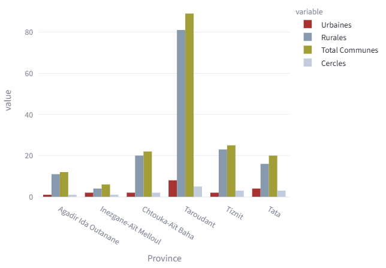
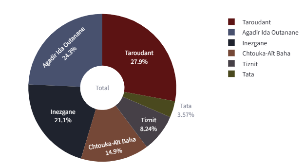
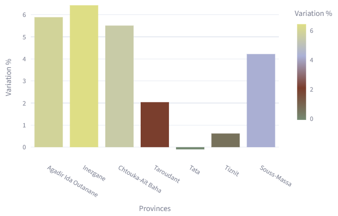
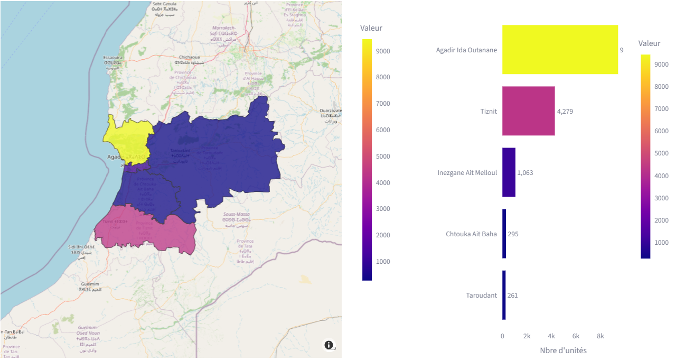
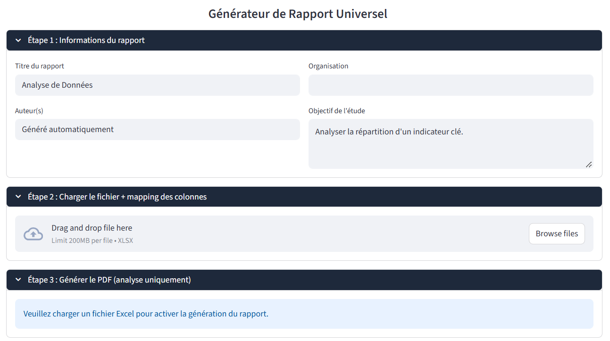

Case study · Personal project, extends my HCP internship work · 2025
Axiora Data
An analytics platform for the socio-economic indicators of the Souss-Massa region, built on open data published by Morocco's High Commission for Planning (HCP).
This page documents how the platform was built: where the data comes from and how it is validated, how the interface is organised, how statistical tables are joined to geographic boundaries, and what the forecasting module does and does not claim.
Context
Morocco's High Commission for Planning publishes a large volume of territorial statistics: census results, poverty and vulnerability rates, labour market indicators, housing, education, health and local finance. The data is public and detailed, but it is distributed as PDF documents and raw spreadsheets.
That format makes some questions expensive to answer. Comparing a province across three census years, or ranking communes by poverty rate, means opening several files, reconciling inconsistent labels and rebuilding the same tables by hand each time. The information exists; reaching it is the obstacle.
Axiora Data brings a selection of these tables into a single interface where an indicator can be filtered, mapped, compared across years and extrapolated. It covers six domains (population, labour, housing, finance, education and poverty) for the Souss-Massa region.
What the platform does
- Explores indicators by year, province and commune, with year-on-year variation
- Renders choropleth maps at province level for every domain, and at commune level for poverty and vulnerability
- Projects indicator trends forward using linear regression
- Answers questions in natural language, constrained to the loaded dataset
- Generates a formatted PDF report from an uploaded Excel file
Architecture
The application is a single Streamlit process. The data lives in the source code as Python dictionaries, and everything downstream reads from memory.
- Sources: HCP regional publications for Souss-Massa, by province and commune, covering 2004 to 2020 depending on the indicator.
- Transcription: tables typed by hand into Python dictionaries, in
hcpdata.pyand inline in each module ofapp.py. - Validation:
validate_data.pychecks table lengths, totals against their parts, missing values and map joins. - Analysis: KPIs, year-on-year variation, top and bottom rankings computed on demand.
- Visualisation: interactive charts with Plotly; choropleth maps with GeoPandas.
- Trend projection: linear regression fitted on the full observed series and extrapolated (scikit-learn); no held-out evaluation, see the limitations of that module.
- Assistant and reporting: Gemini API for question answering, fpdf for report generation.
Holding the data in memory keeps the interface responsive and gives the assistant one structure to work from. Some tables also exist inline in the module that displays them; the validation script reads both copies.
Data and preparation
Sources
All figures come from publications of the HCP regional directorate for Souss-Massa. The tables used by the platform are:
| Publication | Content used in the platform |
|---|---|
| RGPH 2004 and RGPH 2014 | Legal population by province and prefecture, urban and total |
| Communal poverty maps 2004, 2007 and 2014 | Poverty and vulnerability rates for every commune of the six provinces and prefectures |
| Regional statistical yearbook, population chapter | Administrative division, population estimates 2016 to 2018 by setting, age structure, number of households |
| Regional statistical yearbook, labour chapter | Activity, employment and unemployment rates by age, sex, education level and setting |
| Regional statistical yearbook, housing chapter | Housing operations completed, launched, in progress and under study, by province |
| Regional statistical yearbook, finance and economy chapters | Bank deposits and loans, investment projects, regional GDP by sector compared with Morocco |
| Regional statistical yearbook, education chapter | New enrolments, public primary pupils by grade, teaching staff by sex |
| Regional statistical yearbook, health and tourism chapters | Health infrastructure and staff, tourist arrivals and nights by nationality |
Why validation came first
HCP tables are designed to be read by people, not parsed by programs. They are published as PDF tables and spreadsheets, so the platform holds them as Python dictionaries entered from the publications. That step has its own failure modes, and none of them raises an error:
- A skipped cell: every value below it moves up one row, and the column still has plausible numbers
- A missing value typed as 0: it appears on a map as a real 0 % rate
- Subtotal rows: lines such as "Urbain", "Rural" or "Ensemble" sit among the communes and must not be counted as observations
- Spelling variants: the same province is written three or four ways across publications
- Total rows: a regional row inside a provincial table doubles every sum it enters
Each of these produces a plausible but wrong result rather than a crash. HCP tables carry their own totals, which makes most of them detectable automatically, so the data is checked by a script before anything is drawn.
A: Shape
Every column of a table must have the same number of values. A skipped cell is the most common transcription error, and it is visible here before it shifts anything on a chart.
Show code
def check_lengths(name, table):
lens = {c: len(v) for c, v in table.items() if isinstance(v, list)}
if len(set(lens.values())) > 1:
common = max(set(lens.values()), key=list(lens.values()).count)
odd = {c: n for c, n in lens.items() if n != common}
err(f"[length] {name}: most columns have {common} values, but {odd}")
return False
return True
B: Totals
Urbain + Rural must equal Total, Hommes + Femmes must equal Total, and the regional row must equal the sum of the provinces. Rates are excluded, since a rate does not add up. A tolerance of 1 % absorbs the rounding of published tables.
Show code
PAIRS = [("Urbain", "Rural"), ("Hommes", "Femmes"), ("Masculin", "Féminin"), ("Garçons", "Filles")]
for c in cols:
for a, b in PAIRS:
ca, cb = c.replace("Total", a), c.replace("Total", b)
if ca in table and cb in table and ca != c:
for i, (t, x, y) in enumerate(zip(table[c], table[ca], table[cb])):
if not close(t, x + y):
err(f"[total] {name}: {row_name(i)}: {c} = {t} but {a} + {b} = {x + y}")
C: Missing values and subtotal rows
A rate of exactly 0 is flagged as a probable missing value, and missing figures are
stored as None so that they stay empty on maps and out of averages.
Subtotal rows ("Province de ... Urbain", "Rural", "Ensemble") are kept in the
tables, because the assistant uses them, and are filtered out of the commune map,
its rankings and its averages.
Show code
def check_zero_rates(name, table):
lab = label_column(table)
for c, values in table.items():
if isinstance(values, list) and is_rate(c):
zeros = [table[lab][i] for i, v in enumerate(values) if v == 0]
if zeros:
warn(f"[zero] {name}: '{c}' has 0 for {zeros} (missing value typed as 0?)")
# in the poverty module: communes only
df_temp = df_temp[~df_temp["Commune"].str.contains(r"Province de|Préfecture d|\(AC\)", regex=True)]
D: Territorial names
Every province and commune name used in a table must reach a polygon of the official boundary files. The maps use an inner join, so a name that does not match would disappear from the map without any message.
Show code
shapes = {r["ADM2_FR"] for r in read_dbf(ADM2_DBF) if r["ADM2_PCODE"].startswith("MA009")}
for n in sorted(province_names_in_data):
if is_aggregate(n):
continue
if PROVINCE_NAME_MAPPING.get(n, n) not in shapes:
err(f"[map] province name '{n}' does not reach any polygon of the shapefile")
E: Stored structure
Each table is stored column by column, with labels and values aligned by position. The excerpt below is the poverty table for the Agadir Ida Outanane prefecture.
Show code
"Agadir-Ida -Ou-Tanane": {
"Commune": ["Agadir (M)", "Amskroud", "Drargua", "Drargua centre (AC)", "Idmine", ...],
"Taux de pauvreté 2004": [3.7, 23.0, 28.4, 11.7, 18.8, ...],
"Taux de pauvreté 2007": [1.5, 12.6, 11.0, 0.5, 13.6, ...],
"Taux de pauvreté 2014": [0.39, 10.09, 8.86, 6.84, 6.91, ...],
...
}
Consolidation and checks
Every dataset sits in one nested dictionary in hcpdata.py, keyed by
domain, then by table, then by indicator. This single structure feeds the pandas
DataFrames behind each chart and gives the assistant one consistent, hierarchical
context. validate_data.py reads it, and the inline copies in
app.py, without running the app: all 95 tables pass. Because totals
cannot catch a value that is wrong but consistent with its neighbours, the commune
poverty tables were also compared value by value with the HCP sheets.
Interface
State-driven navigation
Streamlit reruns the whole script on every interaction, so navigation has to be
held in explicit state rather than inferred from the call stack. A single
st.session_state key drives which module is rendered.
Show code
if "indices_open" not in st.session_state:
st.session_state.indices_open = False
def toggle_indices():
st.session_state.indices_open = not st.session_state.indices_open
label = "▼ Exploration des Indices" if st.session_state.indices_open else "▶ Exploration des Indices"
st.sidebar.button(label, on_click=toggle_indices)
if st.session_state.indices_open:
if st.sidebar.button("Population"):
go_to("Population")
if st.sidebar.button("Marche de Travail"):
go_to("Marche de Travail")
if st.sidebar.button("Habitat"):
go_to("Habitat")
if st.sidebar.button("Finance"):
go_to("Finance")
if st.sidebar.button("Enseignement"):
go_to("Enseignement")
if st.sidebar.button("pauvrete"):
go_to("pauvrete")


Collapsible indicator menu
Six domains, each with several indicators, would make a flat sidebar unreadable.
An indices_open flag toggles a nested accordion instead, so adding a
module costs one entry rather than a redesign.
Three-zone analysis layout
Each analysis view is split into controls, chart, and the underlying table. Keeping the data visible next to its visualisation lets a reader check a value directly instead of estimating it from a colour scale, which matters when the figures are official statistics.

Show code
col1, col2, col3 = st.columns([1, 3, 1])
with col1:
year = st.radio("Choisir une année :", ["2017", "2018"], index=1, key="radio_year_2")
show_boys = st.checkbox("Afficher Garçons", True, key="chk1")
show_girls = st.checkbox("Afficher Filles", True, key="chk2")
show_total = st.checkbox("Afficher Total", True, key="chk3")
graph_type_viz = st.selectbox("Type de graphique", ["Barre", "Ligne", "Aire", "Nuage de points"], index=2)
with col2:
df_plot = df_2017.copy() if year == "2017" else df_2018.copy()
cols = []
if show_boys: cols.append(f"Garçons {year}")
if show_girls: cols.append(f"Filles {year}")
if show_total: cols.append(f"Total {year}")
df_melted = df_plot.melt(id_vars="Province", value_vars=cols,
var_name="Catégorie", value_name="Valeur")
# ... chart built according to graph_type_viz, then st.plotly_chart(fig)
with col3:
st.dataframe(df_plot[["Province"] + cols], use_container_width=True)
Reusable components
A top bar and a set of KPI cards, injected as HTML with dedicated CSS, give every module the same visual anchors: which territory, which year, which indicator.


Show code
st.markdown("""
<style>
.kpi-banner { background-color: #2b2b45; padding: 1.5rem; border-radius: 0.5rem;
display: flex; justify-content: space-around; align-items: center; }
.kpi-box { text-align: center; flex-grow: 1; padding: 1rem; }
.kpi-label { font-size: 0.9em; color: #ffffff; opacity: 0.8; display: block; }
.kpi-value { font-size: 2em; font-weight: bold; color: #ffffff; display: block; }
.kpi-subvalue { font-size: 0.8em; color: #ffffff; opacity: 0.9; }
</style>
""", unsafe_allow_html=True)
total_val = df_filtre["Valeur"].sum()
min_val = df_filtre["Valeur"].min()
max_val = df_filtre["Valeur"].max()
min_province = df_filtre.loc[df_filtre["Valeur"].idxmin()]
max_province = df_filtre.loc[df_filtre["Valeur"].idxmax()]
st.markdown(f"""
<div class="kpi-banner">
<div class="kpi-box">
<span class="kpi-label">Minimum</span>
<span class="kpi-value">{min_val:,.0f}</span>
<span class="kpi-subvalue">{min_province['Province']}</span>
</div>
<div class="kpi-box">
<span class="kpi-label">Total Régional</span>
<span class="kpi-value">{total_val:,.0f}</span>
<span class="kpi-subvalue">{indicateur_choisi}</span>
</div>
<div class="kpi-box">
<span class="kpi-label">Maximum</span>
<span class="kpi-value">{max_val:,.0f}</span>
<span class="kpi-subvalue">{max_province['Province']}</span>
</div>
</div>
""", unsafe_allow_html=True)
Indicator modules
Population
The question this module addresses is where demographic pressure is concentrating, using the inter-census evolution from 2004 to 2014 and the shift in age structure.
Rather than a standard grouped bar chart, the two census years are drawn as a mirrored area chart: 2004 above the axis, 2014 below it as negative values. The comparison becomes a single shape to read instead of two series to align mentally.
Show code
import plotly.graph_objects as go
def area_miroir(df):
x = df["Provinces"]
y_2004 = df["RGPH 2004 – Urbain"]
y_2014 = df["RGPH 2014 – Urbain"]
fig = go.Figure()
fig.add_trace(go.Scatter(
x=x, y=y_2004,
mode="none",
fill="tozeroy",
name="2004 Urbain"
))
fig.add_trace(go.Scatter(
x=x, y=[-v for v in y_2014],
mode="none",
fill="tozeroy",
name="2014 Urbain"
))
fig.update_layout(
title="Area miroir — Urbain 2004 vs 2014",
xaxis_title="Provinces",
yaxis_title="Population",
hovermode="x unified"
)
return fig

The region splits into two distinct planning problems: dense urban concentration along the coast around Agadir, and wide rural dispersion in Tata and Taroudant. Infrastructure needs in one are not comparable to the other.
The same contrast appears in the administrative structure. Taroudant alone counts 89 communes, 81 of them rural, while the Inezgane-Aït Melloul prefecture has six.

Households follow the population. In 2014, Taroudant, Agadir Ida Outanane and Inezgane-Aït Melloul account for nearly three quarters of the region's households, and between 2014 and 2018 their number grows fastest around Agadir, while it is almost flat in Tiznit and Tata.


Labour market
Averages hide the structure that matters here. This module separates participation by sex and by urban or rural setting, so that gaps rather than levels become visible.


The heatmap shows one column per year and setting, so the gap between men and women can be read for each setting separately. Male employment rates stay around 60 % over the whole period. Female rates are far lower, from about 12 % to 26 %, and higher in rural areas than in towns, a difference the regional total hides. Both fall slightly between 2017 and 2020.
Housing
Housing indicators are a direct proxy for urban pressure and for how well a territory is equipped. The module covers housing operations at four stages (completed, launched, in progress, under study) and, for each, the number of units, the area, the lots, the dwellings and the cost. Each indicator is shown on its own, as a map and as a ranked bar chart, since the units (dwellings, hectares, millions of dirhams) cannot share an axis.

Completed operations are concentrated in Agadir Ida Outanane, with 9,439 of the region's 15,337 units, followed by Tiznit. Chtouka-Aït Baha and Taroudant, the two most rural provinces of the region, record only a few hundred units each. The yearbook gives no figure for Tata, which is left blank rather than shown as zero.
Show code
gdf_merged = gdf_provinces.merge(df_filtre, on="join_key", how="inner")
fig_map = px.choropleth_mapbox(
gdf_merged,
geojson=gdf_merged.geometry,
locations=gdf_merged.index,
color="Valeur",
hover_name="Province",
hover_data={"Valeur": ":,.0f"},
mapbox_style="open-street-map",
center={"lat": 30.2, "lon": -9.0},
zoom=6.5,
opacity=0.75,
color_continuous_scale="Plasma"
)
df_sorted = gdf_merged.sort_values(by="Valeur", ascending=False)
fig_bar = px.bar(
df_sorted, x="Valeur", y="Province", orientation="h",
text_auto=",.0f", color="Valeur", color_continuous_scale="Plasma"
)
Local economy
This module compares the sectoral structure of Souss-Massa against the national figures, to see where the region diverges.

Show code
elif graph_type_pib == "Heatmap":
df_heatmap = df_filtered.set_index("Secteurs")[indicateurs_select_pib]
fig = px.imshow(df_heatmap, text_auto=True, aspect="auto",
color_continuous_scale="YlGnBu")
st.plotly_chart(fig, use_container_width=True)
Education
The education module covers new enrolments in first year, public primary pupils by grade, and teaching staff by sex, for each province in 2017 and 2018. The views compare provinces within a school year and the change between the two years.

Taroudant has by far the largest school population, between 18,000 and 20,000 pupils per grade. In most provinces the numbers decrease slightly from first to sixth grade. Inezgane-Aït Melloul is the exception: it has more pupils in sixth grade than in first, a pattern the yearbook figures alone do not explain.
Show code
df_plot = df_2017.copy() if year == "2017" else df_2018.copy()
# the regional row is the sum of the provinces: it is not drawn next to them
df_plot = df_plot[~df_plot["Province"].str.contains("Total|Région")]
cols = [c for c in df_plot.columns if c in show_cols]
df_melted = df_plot.melt(id_vars="Province", value_vars=cols,
var_name="Classe", value_name="Effectifs")
fig = px.bar(df_melted, x="Province", y="Effectifs", color="Classe",
barmode="group", color_discrete_sequence=palette_viz)
Geographic mapping
The maps join two datasets that were never designed to be joined: the HCP tables
name a territory as the publication writes it, and the official boundary
shapefiles (ADM2_FR for provinces, ADM3_FR for communes)
use their own spelling.
Reconciling two data structures
On one side, the HCP tables identify a territory by its name as written in the
publication. On the other, the official boundary shapefiles identify the same
territory by their own naming convention, in the ADM2_FR field for
provinces and ADM3_FR for communes. A direct join fails on many rows.
Statistical data (HCP)
| Name in the HCP table | Name in the shapefile | Poverty 2014 (%) |
|---|---|---|
| Agadir (M) | Agadir | 0.39 |
| Amskroud | Amskroud | 10.09 |
| Drargua | Drargua | 8.86 |
| Aqsri | Aqesri | 4.30 |
| Biougra (M) | Biougra | 1.02 |
| Ait Amira | Ait Amira | 1.38 |
| Taroudant (province) | Taroudannt | |
| Inezgane Aït Melloul (province) | Inezgane Ait Melloul |
Spatial data (shapefile metadata)
Show code
<metadata xml:lang="en">
<Esri>
<CreaDate>20180822</CreaDate>
<DataProperties>
<itemProps>
<itemName Sync="TRUE">mar_admbnda_adm2_hcp_20230925</itemName>
<nativeExtBox>
<westBL Sync="TRUE">-11.904489</westBL>
<eastBL Sync="TRUE">-1.021043</eastBL>
<southBL Sync="TRUE">26.949936</southBL>
<northBL Sync="TRUE">35.922504</northBL>
</nativeExtBox>
</itemProps>
<coordRef>
<type Sync="TRUE">Geographic</type>
<geogcsn Sync="TRUE">GCS_WGS_1984</geogcsn>
<csUnits Sync="TRUE">Angular Unit: Degree (0.017453)</csUnits>
</coordRef>
</DataProperties>
</Esri>
<eainfo>
<detailed Name="mar_admbnda_adm2_hcp_20230925">
<attr><attrlabl>Shape</attrlabl></attr>
<attr><attrlabl>ADM2_FR</attrlabl></attr>
<attr><attrlabl>ADM2_AR</attrlabl></attr>
<attr><attrlabl>ADM2_PCODE</attrlabl></attr>
<attr><attrlabl>ADM1_FR</attrlabl></attr>
...
</detailed>
</eainfo>
</metadata>
The mismatches are systematic: accents, hyphens, the (M) suffix marking
a municipality, and a few spellings that differ outright (Aqsri and Aqesri,
Taroudant and Taroudannt). For communes, the join key is built on both sides by
lowercasing and removing the suffix, hyphens and apostrophes, and the names that
still differ are mapped explicitly. For provinces, every spelling used in the
tables is mapped by hand to the shapefile name.
Keeping every territory on the map
The join is an inner join, so a name that does not match is dropped without any message: the map simply has one territory fewer, while the totals beside it still look complete. Three rules prevent that:
- One mapping for all modules. Every spelling of a province used in the tables is listed once, in
PROVINCE_NAME_MAPPING, and all four map modules use it.validate_data.pyfails if any province name in the data does not reach a polygon. - One value per polygon. The HCP poverty tables list communes and their urban centres
(AC)as separate rows, but a centre has no polygon of its own. The commune map shows commune rows only. - Clearly labelled summary figures. The figure above the commune map is an unweighted mean of commune rates, so it is labelled as such rather than as a regional rate.
Choropleth rendering
Once the keys match, GeoPandas merges the statistical DataFrame with the GeoDataFrame and Plotly renders the result, colour intensity mapping to the selected indicator.
Show code
PROVINCE_NAME_MAPPING = {
'Agadir Ida Outanane': 'Agadir Ida Ou Tanane', 'Agadir Idaoutanane': 'Agadir Ida Ou Tanane',
'Chtouka Ait Baha': 'Chtouka- Ait Baha', 'Chtouka-Aït Baha': 'Chtouka- Ait Baha',
'Inezgane Aït Melloul': 'Inezgane Ait Melloul', 'Inezgane': 'Inezgane Ait Melloul',
'Taroudant': 'Taroudannt',
# ...
}
df_filtre['join_key'] = df_filtre['Province'].replace(PROVINCE_NAME_MAPPING)
gdf_provinces['join_key'] = gdf_provinces['ADM2_FR']
# inner join: an unmatched name disappears from the map, hence validate_data.py
gdf_merged = gdf_provinces.merge(df_filtre, on='join_key', how='inner')
fig_map = px.choropleth_mapbox(
gdf_merged,
geojson=gdf_merged.geometry,
locations=gdf_merged.index,
color="Valeur",
hover_name="Province",
)

Interaction
- Tooltips: hovering a territory shows its name and exact value, so a reader never has to infer a number from a colour scale.
- Framing: the view is pre-centred on Souss-Massa at a zoom level that fits the region on load.
- Filtering: changing the year or indicator recomputes the join and redraws the map with a colour scale rescaled to the filtered data.
- Counts as dots: for indicators split by sex, such as new enrolments, the map draws one dot per 40 pupils, placed at random inside the province, so that boys and girls can be compared on the same map.


Trend projection
The exploration modules describe what has happened. This module extrapolates the observed trend forward, so that a reader can see the direction and rough magnitude of change rather than only its current level.
Why linear regression
The choice is dictated by the data, not by preference. Census indicators are published roughly every ten years, and the annual series rarely exceed six points. On series that short, a flexible model fits noise and produces projections that look confident and mean nothing.
- Sample size: a handful of temporal observations cannot support a model with many parameters
- Interpretability: a slope coefficient can be stated plainly: this indicator changes by x per year over the observed period
- Inertia: demographic quantities move slowly, so a linear trend is a defensible first approximation
How it is implemented
- Reshaping: each series is reshaped with
pd.meltso that the year becomes an explicit independent variable and the indicator the target. - Fitting: one
LinearRegressionper territory, fitted on the full observed series. - Extrapolation: the fitted line is evaluated at the next three years and appended to the observed series for display.
df_melt = df.melt(
id_vars="Province", value_vars=cols,
var_name="Année", value_name=selected_indicator
)
df_melt["Année"] = df_melt["Année"].str.extract(r"(\d{4})").astype(int)
predictions = []
for prov in df["Province"]:
sub = df_melt[df_melt["Province"] == prov]
X = sub["Année"].values.reshape(-1, 1)
y = sub[selected_indicator].values
model = LinearRegression().fit(X, y)
future_years = np.array([2019, 2020, 2021]).reshape(-1, 1)
y_pred = model.predict(future_years)
for yr, val in zip([2019, 2020, 2021], y_pred):
predictions.append({"Province": prov, "Année": yr,
selected_indicator: val})The model is fitted on every available observation and extrapolated forward. There is no held-out split and no error metric: with series of four to six points (and, for the inter-census indicators, only two), there are not enough observations to hold any back and still fit a line. This is stated plainly below rather than implied, because it determines how much weight these curves can carry.
What the projections show
Each chart joins the observed years (the census years 2004 and 2014, then the annual estimates) to the extrapolated ones on a single line, so the observed part and the projected part have to be read from the axis.


Agadir Ida Outanane and Inezgane-Aït Melloul carry most of the urban growth; Taroudant remains the largest province but grows slowly, and its rural population declines a little each year. Administrative counts (communes, cercles) are shown as observed values only: a line through two years of counts has no meaning.
Limitations
These curves extrapolate an observed trend. They are not forecasts in the statistical sense, and the following constraints apply to every figure this module produces:
- No out-of-sample evaluation. The regression is fitted on the complete series and extrapolated; no portion is held back, so no error metric is reported. The fit quality shown on the charts is in-sample by construction.
- Very short series. Most indicators offer four to six temporal points. Two of the demographic series rest on the 2004 and 2014 censuses alone: two points, through which a straight line passes exactly, leaving no residual and no way to judge the fit.
- No structural change modelled. A linear fit assumes the mechanism producing the trend continues unchanged. It cannot represent a policy shift, an economic shock, or a change in census methodology.
- Univariate. Each indicator is projected from its own history alone. No exogenous variable (climate, public investment, migration) enters the model.
- No uncertainty displayed. The charts show a single line. Confidence intervals on a regression fitted to so few points would be wide, and are not drawn.
This module is intended to make the direction of an observed trend legible. It is not an evaluated predictive model, and its output should not be used on its own as the basis for a planning decision.
Possible extensions
- A real evaluation. Holding out the last points and reporting the error needs longer series than any the app holds today; it is the missing piece, and depends on adding data first.
- Multivariate models. Composite indicators such as poverty depend on several measured quantities; a gradient-boosted model over multiple features would fit that structure better than a univariate line.
- Exogenous variables. Adding geospatial or external data (climate, public investment programmes) as features, provided enough observations exist to justify the added parameters.
Question answering assistant
Charts have a limit: they answer the question they were designed for. A reader who wants a specific figure, or a comparison nobody anticipated, has to hunt for it. The assistant exists to close that gap, not as a general-purpose chatbot, but as a module restricted to the loaded dataset.
How it is constrained
Every request sends the indicator dictionary from hcpdata.py to the
model as context, together with a prompt instructing it to answer only from that
context and to say so when a figure is not there.
Grounding is only as good as the data behind it: a wrong figure in the context is
reported with the same confidence as a right one. The context is therefore the
validated hcpdata.py, and the prompt states the units (raw counts,
rates in percent, other units as named in the column) so the model does not
rescale figures on its own.
Grounding the model in a fixed dataset substantially reduces the risk of invented figures, because the correct values are present in the prompt and the model is instructed not to go beyond them. It does not eliminate it: a language model can still misread a nested structure or mis-attribute a value, and answers on consequential figures should be checked against the tables, which the interface displays alongside every chart for exactly this reason.
Show code
genai.configure(api_key=st.secrets["GEMINI_API_KEY"])
model = genai.GenerativeModel('gemini-2.5-flash')
def donnees_pour_assistant():
# the validated tables from hcpdata.py
return hcp_data
def response_to_query(query):
data_json = json.dumps(donnees_pour_assistant(), indent=2, ensure_ascii=False)
prompt = f"""
Tu es un assistant expert en données statistiques du HCP.
Si la question porte sur des données chiffrées, réponds UNIQUEMENT à partir
des données suivantes. [...] Si la donnée demandée n'y figure pas, dis-le
au lieu de l'estimer.
Données HCP :
{data_json}
[...]
"""
return model.generate_content(prompt).text
Question types
Direct lookup
"What was the poverty rate in Drargua in 2014?"
The model locates the value in the injected structure and returns it.
Comparison
"Which province had the highest urban unemployment rate in 2016?"
Values are compared across the provinces of the relevant table.
Summary
"Summarise the regional labour market between 2017 and 2020 in three points."
Several tables are combined into a short written synthesis.
Conversation handling
- History: exchanges are stored in
st.session_stateand displayed as a conversation. Each question is answered on its own, so a follow-up question names the indicator again. - Formatting: answers are rendered as Markdown, so lists and tables returned by the model display as such rather than as raw text.
Automated PDF reporting
An analysis that cannot be circulated has limited use in an administrative setting. This module turns an uploaded Excel file into a formatted PDF document, assembled without manual editing: the user maps the columns to analyse, and the report is built from them.
Report contents
- Descriptive statistics: count, mean, standard deviation, quartiles and extremes of the mapped value column, with top and bottom ten rankings to expose disparity between localities.
- Charts: Matplotlib charts (top items, averages by group) rendered as images and embedded in the document flow.
- Structure: a generated table of contents, automatic pagination, and section headings, built by extending the
FPDFclass with custom header, footer and TOC handling.
Export
- Encoding: latin-1 handling so French text and locality names render correctly.
- Naming: files are named after the report title with a timestamp (
Title_YYYYMMDD_HHMM.pdf), which keeps successive exports sortable. - Delivery:
st.download_buttonstreams the in-memory buffer straight to the browser, with no server-side storage.

Outcome
The platform is deployed and publicly accessible. It brings HCP tables for six domains into a single interface where an indicator can be filtered, mapped, compared and extrapolated without reopening a publication.
Three parts of the work carry the most weight:
- Data validation. HCP tables carry their own totals, and the validation script uses them to check every table, together with a value-by-value comparison of the poverty tables with their source.
- The spatial join. Statistical tables and boundary files name territories differently; a shared mapping and an automatic check keep every province and commune on the map.
- Constraining the assistant. The model answers from the validated tables only, with explicit units, and says when a figure is not available.
What I would do differently
Read the HCP files directly instead of entering tables by hand, so that each table is imported once and validated on every run. The checks are cheap to write because the tables carry their own totals, and they belong at the start of a project like this one.
The forecasting module is the weakest part of the project, and knowingly so. It extrapolates without evaluating, because the series are too short to hold anything back, but the interface presents the result as a curve like any other, which overstates it. Revisiting it, I would restructure the data to obtain longer series where possible, hold out a genuine test portion on those, report the resulting error next to each projection, and mark the two-point census series as extrapolation only.
Next steps
- Direct import. Read the HCP spreadsheets and yearbook tables directly, and extend the value-by-value source comparison to every domain.
- 2024 census integration. Load the new demographic and socio-economic indicators as HCP publishes them, extending every series by one census point.
- Forecasting. Move to seasonal and multivariate models where series length allows, and surface uncertainty in the interface.
- Deployment. Containerise the application with Docker for institutional servers, and add a caching layer for larger data volumes.